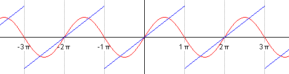
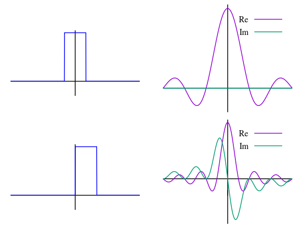

When I was studying differential equations, I didn’t think that Fourier analysis would be that useful, seeing how out-there it seemed at the time. Well, it turns out that they are really useful, especially in signal processing and materials science. Let’s talk about them!
Linear Algebra Review
The inner product (dot product) of two vectors is the sum of the pairwise products of their components:
$$
a = [a_1, \dots, a_n], b = [b_1, \dots, b_n] \implies \langle a, b \rangle = a^Tb = \sum_{k = 1}^n a_kb_k
$$
The inner product of $a$ and $b$ can be thought of as the component of $a$ projected onto $b$, multiplied by $b$’s length. From this, we can derive two important properties of the inner product:
- If the inner product of two vectors is 0, then they’re orthogonal to each other in $\mathbb{R}^n$.
- The inner product of a vector with itself is its length squared. If $\langle v, v \rangle = 1$, then we say that $v$ is normalized
Two normalized vectors that are orthogonal are called orthonormal. If we have $n$ orthonormal vectors $q_1, \dots, q_n$ in $\mathbb{R}^n$, then we say that those $n$ vectors form an orthonormal basis. That is, any vector $v$ in $\mathbb{R}^n$ can be written as a linear combination of those basis vectors: $v = \sum_{k = 1}^n c_kq_k$.
The coefficients $c_k$ can be obtained by projecting $v$ onto $q_k$, which is an inner product, so we get $v = \sum_{k = 1}^n \langle v, q_k \rangle q_k$. If the basis vectors are just orthogonal but not normalized, then we also have to divide $c_k$ by $\langle q_k, q_k \rangle$.
Extending it to Functions
A lot of the techniques that we use in linear algebra can be extended to work for functions and even infinite dimensions. For example, operators (used in quantum mechanics) are to functions as matrices are to vectors. As such, we can define the inner product of two functions $f$ and $g$ on the interval $[a, b]$ as:
$$
\langle f, g \rangle = \int_a^b f(x)g(x)dx
$$
(Note that this is just one definition of the inner product – we’ll use this one because it’s convenient).
Real Fourier Series
Now, consider the interval $[-L, L]$ and functions of the form $\cos\left(\frac{k\pi x}{L}\right)$ and $\sin\left(\frac{k\pi x}{L}\right)$, where $k$ is a non-negative integer. If we plug these functions into our above definition of the inner product, we can see that they’re all orthogonal to each other. In fact, they form a basis for all continuous functions on the interval $[-L, L]$. How convenient!
Because of this, we can approximate any such function $f$ as:
$$
f(x) = \frac{a_0}{2} + \sum_{k = 1}^\infty a_k \cos\left(\frac{k\pi x}{L}\right) + b_k \sin\left(\frac{k\pi x}{L}\right)
$$
Where the coefficients are calculated as:
$$
\begin{cases}
a_k = \frac{1}{L} \int_{-L}^L f(x)\cos\left(\frac{k\pi x}{L}\right) dx\\
b_k = \frac{1}{L} \int_{-L}^L f(x)\sin\left(\frac{k\pi x}{L}\right) dx
\end{cases}
$$
The reason why we divide $a_0$ by $2$ is that $\langle \cos\left(\frac{k\pi x}{L}\right), \cos\left(\frac{k\pi x}{L}\right) \rangle$ is $2L$ if $k = 0$ and $L$ if $k \neq 0$. Also, $b_0 = 0$, so we don’t show it in the equation.
This works very well for all periodic functions with period $2L$, and it converges quite quickly too.
Animation of a partial Fourier series, courtesy of Wikipedia
In the context of differential equations, this is useful for turning ugly input functions into sinusoids, which we can then solve using undetermined coefficients. Such a solution is called the formal Fourier series solution of the differential equation.
Complex Fourier Series
Since Euler’s formula ($e^{i\theta} = \cos \theta + i\sin \theta$) tells us how to relate sinusoids to complex exponentials, we can also express the Fourier series in terms of complex exponentials:
$$
f(x) = \sum_{k = -\infty}^\infty c_k e^{i\omega kx}
$$
Where $\omega = \frac{\pi}{L}$ is the angular frequency and $c_k$ is calculated as:
$$
c_k = \frac{1}{2L} \int_{-L}^L f(x)e^{-i\omega kx} dx
$$
This form is more compact and is used a lot in electrical engineering.
Fourier Transforms
You may have noticed that in real Fourier series, the sinusoid coefficients are the same, while in complex Fourier series, we multiply by $e^{-i\omega kx}$ to get $c_k$ but then $e^{i\omega kx}$ to reconstruct $f$. This leads us to our next idea – the Fourier transform.
The 1D Fourier transform $\hat f(k)$ of a function $f(x)$ is defined as:
$$
\hat f(k) = \frac{1}{\sqrt{2\pi}} \int_{-\infty}^\infty f(x)e^{-ikx}dx
$$
While the inverse Fourier transform (i.e., getting from $\hat f(k)$ to $f(x)$) is defined as:
$$
\hat f(x) = \frac{1}{\sqrt{2\pi}} \int_{-\infty}^\infty \hat f(k)e^{ikx}dk
$$
Note the difference in variables between the two functions.
Essentially, the Fourier transform takes an input signal and tells us what frequencies it’s composed of. In other words, it converts the function from the time domain to the frequency domain (and the inverse does the opposite). It’s a bit like constructing the Fourier series, except with continuous frequencies instead of discrete ones.
Fourier transform of two unit pulses, courtesy of Wikipedia
I still don’t have much experience with Fourier transforms, but I know that it’s useful for:
- Quantum computing (Shor’s algorithm involves the quantum Fourier transform).
- Fast polynomial multiplication (FFTs are a whole class of algorithms).
- X-ray diffraction (reciprocal space is the 3D Fourier transform of real space).
- Nuclear magnetic resonance imaging (Fourier transform spectroscopy).
- Probably a lot of stuff in signal processing.
Hopefully, I’ll learn more about applying this technique to solving problems soon!
References
- MIT OpenCourseWare. 2013. Electronic, Optical and Magnetic Properties of Materials. [ONLINE] Available at: https://ocw.mit.edu/courses/3-024-electronic-optical-and-magnetic-properties-of-materials-spring-2013/. [Accessed 9 June 2022].
- MIT 18.03 Ordinary Differential Equations. 2017. 18.03 Notes and Exercises. [ONLINE] Available at: https://math.mit.edu/~jorloff/suppnotes/suppnotes03/ASENotesAndExercises.html. [Accessed 6 June 2022].
- Wikipedia. 2022. Fourier series. [ONLINE] Available at: https://en.wikipedia.org/wiki/Fourier_series. [Accessed 11 June 2022].